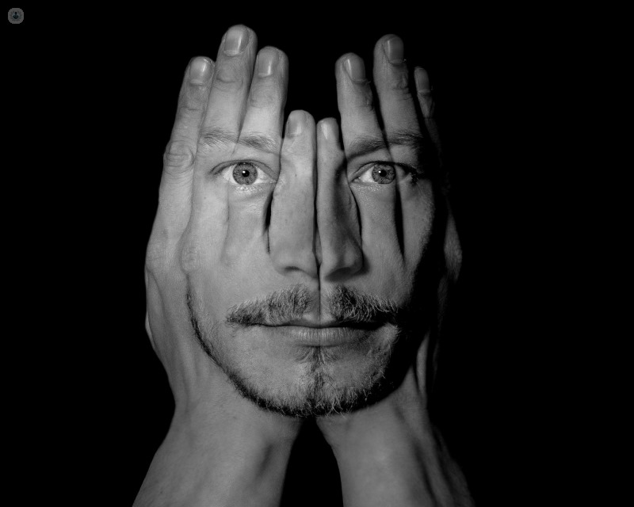

Síntomas Positivos:
ALUCINACIONES:
ALUCINACIONES AUDITIVAS
ALUCINACIONES VISUALES
ALUCINACIONES OLFATIVAS Y GUSTATIVAS
DILIRIOS:
DELIRIOS DE PERSECUCIÓN
RESISTENCIA A LA CONTRADICCIÓN
HIPERVIGILANCIA Y PENSAMIENTOS CODIFICADOS EN LOS MEDIOS DE COMUNICACIÓN
AISLAMIENTO SOCIAL Y DIFICULTADES EN LAS RELACIONES:
AISLAMIENTO SOCIAL
DIFICULTADES EN LAS RELACIONES INTERPERSONALES.
FACTORES DE RIESGOS:
| TIPO | FACTOR | DESCRIPCIÓN |
|---|---|---|
| Genético | Heredabilidad | La heredabilidad de la esquizofrenia se estima en alrededor del 80%. |
| Variantes Genéticas Raras | Las mutaciones raras, como deleciones, duplicaciones o cambios en la secuencia genética, pueden influir significativamente en la predisposición a la esquizofrenia. | Ambiental | Vida en Entornos Urbanos | Las personas en ciudades densamente pobladas tienen un riesgo 2 a 3 veces mayor de desarrollar esquizofrenia que quienes viven en áreas rurales. |
| Eventos Traumáticos | La exposición a traumas en la infancia, como abuso físico, emocional o la pérdida de un ser querido, está vinculada a un mayor riesgo de desarrollar esquizofrenia en la adultez. | |
| Consumo de Sustancias | El uso de drogas recreativas, especialmente durante la adolescencia, puede ser un factor de riesgo importante. | |
| Desnutrición Prenatal | La desnutrición o infecciones durante el embarazo pueden afectar el desarrollo fetal. |